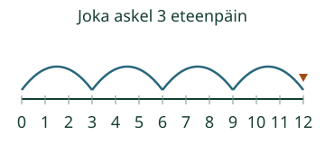
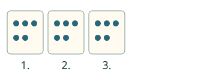

Aava ryhmittelee, Loikka askeltaa.
Löydän luvut, joihin päädyn yhtä suurilla askeleilla nollasta.
Nollasta saman verran
Valitse askel.
Reitti ja toisto
Paina yhtä askelta tai valitse toinen reitti. Saat kokeilla heti.
Askelten määrä ja päätepiste ovat eri luvut
0 → 3 → 6 → 9 → 12. Neljällä kolmen askeleella päädyt lukuun 12, et lukuun 4. Luvut 3, 6, 9 ja 12 ovat kolmen monikertoja: niihin päädytään toistamalla samaa kolmen askelta nollasta.

Ryhmiä vai merkkejä?
Aavalla on kolme ryhmää, jokaisessa viisi merkkiä. Merkkejä on yhteensä 5, 10, 15: siis 15. Ryhmiä on 3. Kuvat esittävät samanlaisia laskettavia merkkejä, eivät kolmea erilaista esinelajia.

Mieti: kolmen askelilla kuljetaan 6:sta 9:ään. Onko 8 päätepiste?
Katso ajatus
Ei. 8 jää kahden päätepisteen väliin. Askeleen aikana sen kohdalta voi kulkea, mutta siihen ei päädytä askeleen lopussa.
Kokeile oma vastaus
Lähtö on 0. Jokainen askel on 3. Mihin päädyt neljännellä askeleella?
Apua
Aloita aina nollasta. Katso yhden askelen koko ja toista se. Voit katsoa lukusuoraa tai näyttää samankokoiset merkkiryhmät mallin alta. Malli ei kirjoita harjoituksen vastausta.
Tutki lisää
Nolla on aloituspaikka, kun askelia on 0. Myös 0 kuuluu näin saataviin ei-negatiivisiin monikertoihin. Tässä positiivisen askelen päätepisteet alkavat luvusta 2, 3 tai 5; monivalinnassa pyydetään vain luvut 1–12.
Lopuksi: Nollasta kolme viiden askelta: mikä on päätepiste? Montako askelta teit?
Opettajalle ja ilman ruutua
Lukusuoran yhden numerovälin pituus pysyy samana. Osoitin näyttää paikan; liike ei mittaa fyysistä hyppyä. Ei automaattista toistoa.
Luokat 1–2. Vaadittu esitieto on M-NUM-07. Numerot, askelsääntö ja mallin sanat annetaan tässä; ei uutta puhe-, esineiden nimeämis- tai laskutoimitusmerkkien porttia. Aikuinen voi lukea. Tuki ja malli ovat vapaaehtoisia.
Tee samanlaisista merkeistä yhtä suuret ryhmät. Laske ensin ryhmät ja sitten kaikki merkit ryhmä kerrallaan. Aikuinen havainnoi erikseen, miten kokonaismäärä lasketaan; oikea ruutuvastaus ei kerro laskutapaa.
Päätepisteen tai tuetun ryhmäkokonaismäärän löytäminen ei osoita kertotaulun ulkoa muistamista, kertolaskumerkin käyttöä tai itsenäistä ryhmittelystrategiaa. Mallit käyttävät positiivista askelta 2, 3 tai 5 ja enintään viittä askelta; lähtö ja nolla askelta näytetään erikseen. Paikallinen harjoitus ei myönnä formaalia peli- tai prosessihallintaa, henkilökohtaista osaamismerkintää tai oppilaan itsenäisyysarviota. Ei tallennusta, aikarajaa tai vaikuttavuusväitettä.